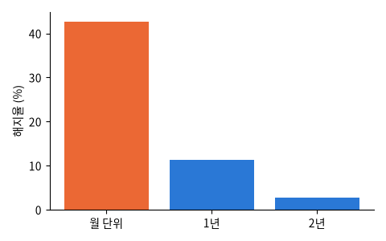

IBM 샘플 데이터: 가상의 통신사 가입자 7,043명. 가입 기간 · 요금제 · 부가 서비스 · 결제 방법 · 월 요금 · 지난달 해지 여부

| gender | SeniorCitizen | Partner | Dependents | tenure | PhoneService | MultipleLines | InternetService | OnlineSecurity | OnlineBackup | DeviceProtection | TechSupport |
|---|---|---|---|---|---|---|---|---|---|---|---|
| Female | 0 | No | No | 19 | Yes | No | DSL | No | Yes | No | No |
| Male | 0 | No | No | 60 | Yes | Yes | Fiber optic | Yes | Yes | Yes | Yes |
| Female | 0 | No | No | 13 | Yes | No | DSL | Yes | No | No | No |
| Male | 0 | No | No | 1 | Yes | No | No | No internet service | No internet service | No internet service | No internet service |
| Female | 0 | Yes | No | 55 | Yes | Yes | Fiber optic | No | Yes | No | No |
| Male | 1 | No | No | 3 | Yes | No | Fiber optic | No | No | No | No |
| 열 | 종류 | 빈칸 | 고유값 수 | 범위 · 대표값 |
|---|---|---|---|---|
| gender | 글자 · 범주 | 0 | 2 | 가장 흔한 값: Male (50.5%) |
| SeniorCitizen | 숫자 | 0 | 2 | 0 ~ 1 (평균 0.1621) |
| Partner | 글자 · 범주 | 0 | 2 | 가장 흔한 값: No (51.7%) |
| Dependents | 글자 · 범주 | 0 | 2 | 가장 흔한 값: No (70.0%) |
| tenure | 숫자 | 0 | 73 | 0 ~ 72 (평균 32.37) |
| PhoneService | 글자 · 범주 | 0 | 2 | 가장 흔한 값: Yes (90.3%) |
| MultipleLines | 글자 · 범주 | 0 | 3 | 가장 흔한 값: No (48.1%) |
| InternetService | 글자 · 범주 | 0 | 3 | 가장 흔한 값: Fiber optic (44.0%) |
| OnlineSecurity | 글자 · 범주 | 0 | 3 | 가장 흔한 값: No (49.7%) |
| OnlineBackup | 글자 · 범주 | 0 | 3 | 가장 흔한 값: No (43.8%) |
| DeviceProtection | 글자 · 범주 | 0 | 3 | 가장 흔한 값: No (43.9%) |
| TechSupport | 글자 · 범주 | 0 | 3 | 가장 흔한 값: No (49.3%) |
| StreamingTV | 글자 · 범주 | 0 | 3 | 가장 흔한 값: No (39.9%) |
| StreamingMovies | 글자 · 범주 | 0 | 3 | 가장 흔한 값: No (39.5%) |
| Contract | 글자 · 범주 | 0 | 3 | 가장 흔한 값: Month-to-month (55.0%) |
| PaperlessBilling | 글자 · 범주 | 0 | 2 | 가장 흔한 값: Yes (59.2%) |
월 단위 계약의 해지율이 압도적으로 높다
가입 초반에 많이 떠난다
| ① 한 행 | 가입자 한 명 |
| ② 입력 X | 가입 기간 · 계약 종류 · 인터넷 · 부가 서비스 · 결제 방법 · 월 요금 |
| ③ 출력 y | 해지했나 (Churn) |
| ④ 평가지표 | 재현율 · 정밀도 (붙잡을 사람 고르기) |
| ⑤ 기준선 | 아무도 안 떠난다 |
문제를 정할 때 처음 채워 보는 칸들입니다. 여기서 끝이 아니라, 시험 데이터를 어떻게 나눌지 · 틀렸을 때 손해가 얼마인지 · 예측 시점에 정말 알 수 있는 값인지 같은 칸을 더 붙일수록 좋은 문제가 됩니다.
nobody leaves: accuracy 73.5% model: accuracy 78.8%, ROC-AUC 0.83
누가, 왜, 어떻게 만든 데이터인지 직접 확인해 보세요.
프로젝트 주제를 고를 때 참고하세요 (일반적인 예시).